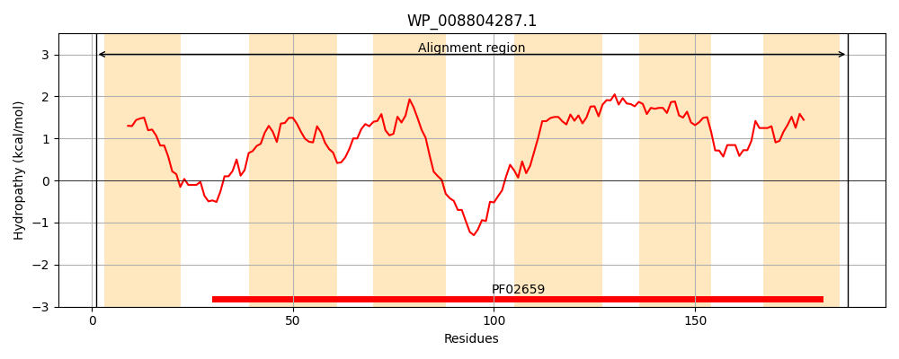
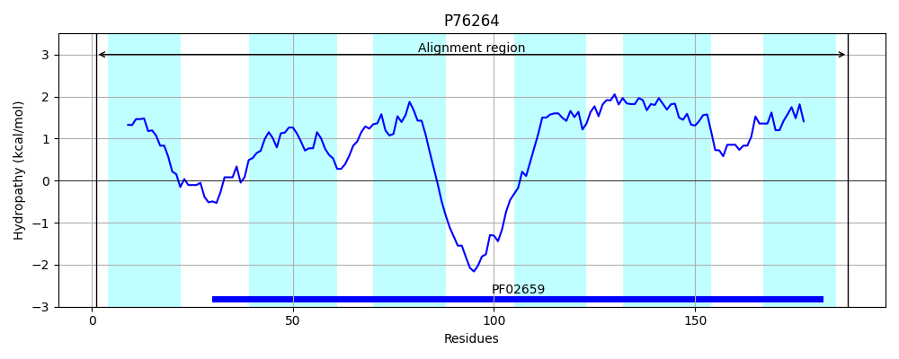
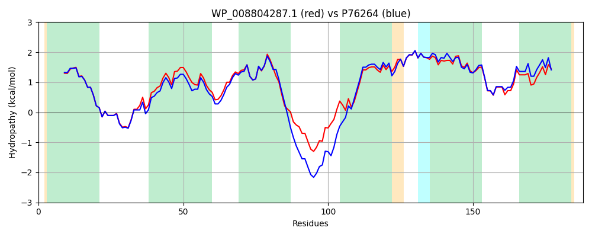

Hit Accession: P76264
Hit TCID: 2.A.107.1.1
Hit Description: gnl|BL_ORD_ID|11454 gnl|TC-DB|P76264|2.A.107.1.1 HYPOTHETICAL 22.1 KDA PROTEIN IN MANZ-CSPC INTERGENIC REGION - Escherichia coli.
Mach Len: 188
e:0.000000
Query TMS Count : 6
Hit TMS Count: 6
TMS-Overlap Score: 5.900000
Predicted Substrates:CHEBI:29035;manganese(2+)
BLAST Alignment:
Score: 816 , Bit scores: 318 bits, E-value: 7.0e-113, Alignment length: 188, Percentage identity: 81
Query: 1 MNLSATILLAFGMSMDAFAASIGKGATLHKPKFSEAVRTGLIFGVIETLTPLVGWGLGMLASQFVLEWNHWIAFILLVFLGGRMIVEGVRGDSDEACDAPRRHGFWLLVTTAFATSLDAMAVGVGLAFLQVSIVTTALAIGCATFLMSTLGIMVGRFIGPLLGKRAEILGGIVLIGIGSEILWSHFAG 188
MN++AT+LLAFGMSMDAFAASIGKGATLHKPKFSEA+RTGLIFG +ETLTPL+GWG+GMLAS+FVLEWNHWIAF+LL+FLGGRMI+EG RG DE + RRHGFWLLVTTA ATSLDAMAVGVGLAFLQV+I+ TALAIGCAT +MSTLG+MVGRFIG ++GK+AEILGG+VLIGIG +ILW+HF G
Sbjct: 1 MNITATVLLAFGMSMDAFAASIGKGATLHKPKFSEALRTGLIFGAVETLTPLIGWGMGMLASRFVLEWNHWIAFVLLIFLGGRMIIEGFRGADDEDEEPRRRHGFWLLVTTAIATSLDAMAVGVGLAFLQVNIIATALAIGCATLIMSTLGMMVGRFIGSIIGKKAEILGGLVLIGIGVQILWTHFHG 188 | Protein Hydropathy Plots: |
|---|
|  |  |
Pairwise Alignment-Hydropathy Plot:
|
|---|
|  |